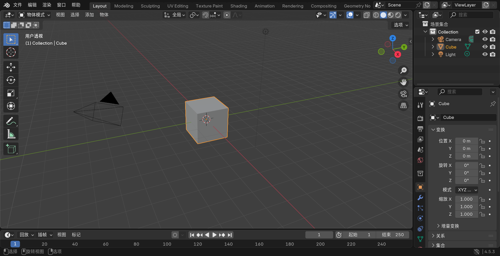
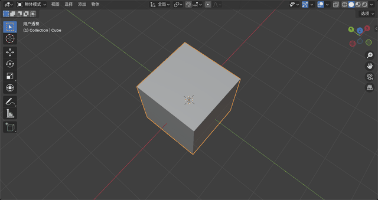
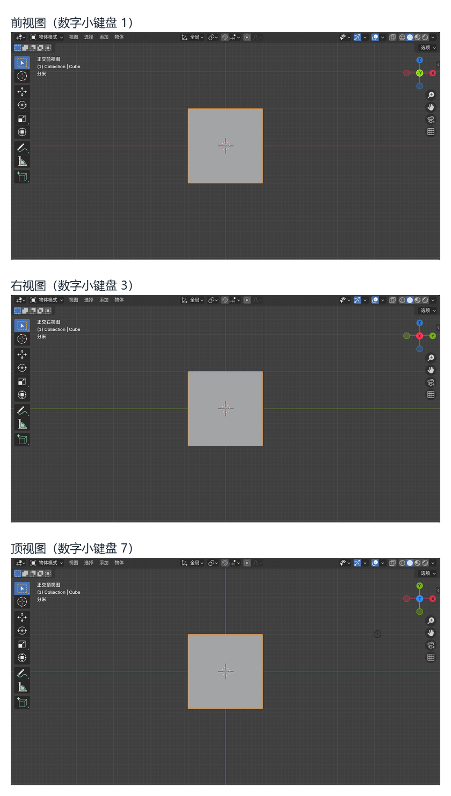
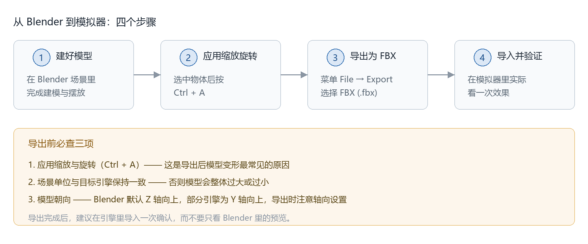

三维建模软件 Blender 介绍
本文是入门篇，只覆盖三件事：Blender 是什么、怎么下载安装、基本界面和操作。阅读本文不需要任何编程或建模基础。
更深入的内容（建模流程、骨骼绑定、材质与动画、导出规范等）会随着社区的具体任务逐步补充。
1. Blender 是什么
Blender 是一款免费、开源的三维创作软件，由荷兰的 Blender Foundation 维护，官网为 https://www.blender.org。它覆盖三维制作的完整流程：建模、雕刻、UV 展开、骨骼绑定、动画、物理模拟、渲染、合成与视频剪辑。
与 Maya、3ds Max、Cinema 4D 等商业软件相比，Blender 的主要特点是：
- 免费且开源：采用 GNU GPL 协议，不需要授权、许可密钥或账号，全部功能开箱即用；
- 跨平台：Windows、macOS、Linux 均可运行，同一个
.blend工程文件可以跨平台打开； - 更新活跃：每约四个月发布一个正式版本，其中 LTS（Long Term Support，长期支持）版本提供约两年的维护更新。当前最新的长期支持版本为 Blender 5.2 LTS（2026 年 7 月发布，支持至 2028 年 7 月），上一代 4.5 LTS 仍在支持期内（至 2027 年 7 月），本文的截图取自 4.5 LTS 分支的 4.5.3 版本；
- 生态成熟：官方手册提供简体中文版本，社区教程、插件与现成模型资源数量庞大。
需要说明的是，Blender 的能力远不止“建模”一项。本社区主要用它制作三维资产（模型、材质、动作），但渲染、动画、视频剪辑等功能同样内置，可以在需要时继续使用，不必另外安装软件。
2. 它在社区里做什么
根据社区的组织形式文档，OpenHUTB 的技术分工分为三条线：
| 方向 | 主要语言 / 工具 | 门槛 |
|---|---|---|
| 算法研究 | Python | 需要机器学习基础 |
| 底层开发 | C++ | 门槛最高 |
| 艺术创作 | 三维模型（Blender） | 不写代码 |
而社区模拟器服务的载体包括：肌肉骨骼人、人形机器人、自动驾驶、无人机、水下机器人。
这意味着艺术创作是三条线中唯一不需要编程能力的一条。使用 Blender 制作的模型、材质和动作，最终作为三维资产进入模拟器场景，成为另外两条线所依赖的素材。不会编程的同学同样可以参与社区开发，从这条线入手。
3. 下载与安装
官方下载页：https://www.blender.org/download/
国内网络下下载速度较慢时，可以使用高校或云厂商的镜像站，例如：
- 清华大学 TUNA：https://mirrors.tuna.tsinghua.edu.cn/blender/
- 中国科学技术大学：https://mirrors.ustc.edu.cn/blender/
各平台的获取方式：
| 系统 | 获取方式 |
|---|---|
| Windows | 官网 Installer（.msi，推荐）或 Portable（.zip，免安装）；也可从 Microsoft Store 或 Steam 安装 |
| macOS | 按芯片选择 Apple Silicon 或 Intel 版本，下载后拖入「应用程序」文件夹 |
| Linux | 官网压缩包解压即用；也可用包管理器安装，例如 snap install blender --classic |
建议直接选择 LTS 版本：稳定性优先，且后续约两年的维护更新都能收到。下载页会同时列出最新正式版与 LTS 版本。
首次启动时，Blender 会询问主题、键位方案和鼠标选择方式。建议全部保持默认，即使用 Blender 默认键位与左键选择。原因很实际：网上绝大多数教程都基于默认键位录制，改动之后照教程操作会出现“按了没反应”或“效果不一样”的情况，排查起来很费时间。
安装包体积约 300–400 MB。解压或安装时建议使用纯英文路径（例如 C:\Blender），避免个别插件在中文路径下解析失败。
4. 界面速览
首次打开 Blender，默认场景中包含一个立方体、一台摄像机和一盏灯光。界面按区域划分，整体布局如下：

图 1：Blender 4.5.3 首次启动后的默认界面（中文界面）。图中各区域的名称与作用见下表。
| 区域 | 位置 | 作用 |
|---|---|---|
| 3D 视图（3D Viewport） | 中央最大区域 | 查看、选择、移动和编辑物体，绝大多数操作在这里完成 |
| 大纲视图（Outliner） | 右上角 | 列出场景中的所有物体，找不到物体时来此处查找 |
| 属性编辑器（Properties） | 右下角 | 设置选中物体的材质、修改器，以及渲染参数 |
| 时间轴（Timeline） | 底部 | 播放动画、设置关键帧，只做静帧模型时可以暂时忽略 |
顶部还有一排工作区标签，如 Layout（布局）、Modeling（建模）、Sculpting（雕刻）、Shading（着色）、Animation（动画）、Rendering（渲染）等，用于切换不同任务下的界面布局。入门阶段主要使用 Layout 和 Modeling。
每个区域都可以拖动边框改变大小，界面不会被写死。
5. 基本操作
5.1 用鼠标换视角
打开软件后第一件事，是学会怎么看你的模型：

图 2（动图）：按住鼠标中键拖动，视角会绕模型转动。
Blender 的操作高度依赖快捷键，初学时记住下面这些即可完成大部分浏览和调整：
| 操作 | 快捷键 |
|---|---|
| 旋转视角 | 按住鼠标中键拖动 |
| 平移视角 | Shift + 鼠标中键拖动 |
| 缩放视角 | 滚轮 |
| 添加物体 | Shift + A |
| 移动 / 旋转 / 缩放 | G / R / S |
| 沿指定轴移动 | G，然后按 X / Y / Z |
| 切换编辑模式 | Tab |
| 删除选中物体 | X |
| 框选 | B |
一个对初学者很有用的细节：G、R、S 之后按 X / Y / Z 可以锁定轴向，此时再直接输入数字就能精确位移；按 Esc 或右键可以取消本次操作。先把 G / R / S 加轴向这一组练熟，后面调模型位置会顺畅很多。
5.2 认清方向，并快速切到标准视图
三维空间里最容易迷路的就是方向。视图中的坐标轴以颜色区分方向：X 轴为红色（左右），Y 轴为绿色（前后），Z 轴为蓝色（上下）。这个方向约定与主流三维软件一致，后面调整模型朝向时会反复用到。
除了记颜色，还可以用数字小键盘直接跳到标准角度，省下大量拖鼠标的时间：

图 3：依次按下数字小键盘的 1、3、7，分别得到前视图（正视）、右视图和顶视图。
需要说明的是，这套数字键位于键盘右侧的数字小键盘上；只有主键盘区数字键的笔记本，可以在「Edit → Preferences → Input」中勾选「Emulate Numpad（模拟小键盘）」来替代。
6. 从 Blender 到模拟器
本节给出最小可用流程，更完整的模型接入规范会在社区的模型类任务中进一步展开。

图 4：从建模到导入模拟器的四个步骤，以及导出前需要检查的三项。
在「File → Export」中可以看到 Blender 支持的导出格式，常用的是：
| 格式 | 扩展名 | 适用场景 |
|---|---|---|
| FBX | .fbx |
主流游戏引擎的原生支持格式，包含网格、材质、骨骼与动画。本项目模拟器基于虚幻引擎，导入自定义模型时优先使用该格式 |
| glTF 2.0 | .glb / .gltf |
开放的实时传输格式，文件体积小，适合跨引擎交换与网页展示 |
| OBJ | .obj |
通用性强，但只包含几何与 UV 信息，不含骨骼与动画 |
导出前建议确认三点：
- 应用物体的缩放与旋转（选中物体后
Ctrl+A），否则导入引擎后尺寸和朝向可能与预期不符，这也是导出后“模型变形”最常见的原因； - 确认场景单位与目标引擎一致，避免模型整体过大或过小；
- 确认模型朝向：不同软件的正向轴约定不同（Blender 默认 Z 轴向上，部分引擎为 Y 轴向上），导出设置中通常有相应的轴向选项，导入后偏差较大时优先检查这一项。
导出完成后，建议在引擎中实际导入一次验证效果，而不是只看 Blender 里的预览。
社区文档站为 https://openhutb.github.io/，模型接入模拟器的具体流程以该站对应项目的说明为准；遇到问题可以在相关仓库的 Issues 页面提出。
7. 学习资源
- Blender 官方手册（含简体中文）：https://docs.blender.org/manual/zh-hans/
- Blender 官方教程页：https://www.blender.org/support/tutorials/
- Blender Studio 官方基础培训（免费，持续更新）：https://studio.blender.org/training/blender-fundamentals/
学习建议：不必系统看完整套课程。先用默认场景里的立方体把「旋转视角、移动物体、切到编辑模式改形状」这几件事做完一遍，再带着具体目标去查对应章节，效率更高。
8. 常见问题
界面是英文的，怎么改成中文？
依次进入「Edit → Preferences → Interface → Translation」，Language 选择「Simplified Chinese（简体中文）」。建议同时勾选 Tooltips，使鼠标悬停提示也显示中文。
笔记本没有鼠标中键，怎么旋转视角？
在「Edit → Preferences → Input」中勾选「Emulate 3 Button Mouse」，之后用 Alt + 左键拖动代替中键。
笔记本没有数字小键盘，怎么切标准视图？
同样在「Edit → Preferences → Input」中勾选「Emulate Numpad」，主键盘区的数字键即可当作小键盘使用。
Blender 对电脑配置要求高吗？
建模与视图操作对配置要求不高，普通笔记本即可流畅使用；渲染、物理模拟等环节对显卡和内存要求较高。入门阶段完全不必担心配置问题。
.blend 文件用高版本保存后，低版本打不开怎么办？
Blender 的工程文件通常不向下兼容，用新版本保存的文件无法在旧版本中打开。团队协作时建议统一版本，或改用 FBX / glTF 等中间格式传递。
导出后模型变了形，或者尺寸不对？
优先检查是否漏了「应用缩放与旋转」（Ctrl + A），这是导出问题中最常见的原因；其次检查导出时的轴向设置。
遇到本文没有覆盖的问题，可以在相关仓库的 Issues 页面 提问，或参考社区的提问技巧。
说明：本文配图（图 1 至图 4）中，图 1 至图 3 取自 Blender 4.5.3 的中文界面（图 2 为动图，图 3 为三张视图的拼合），图 4 为流程示意图。